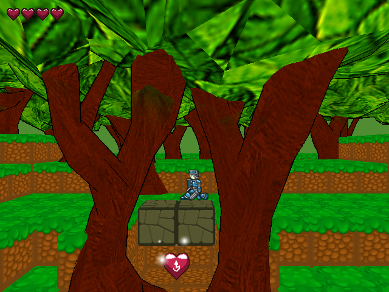
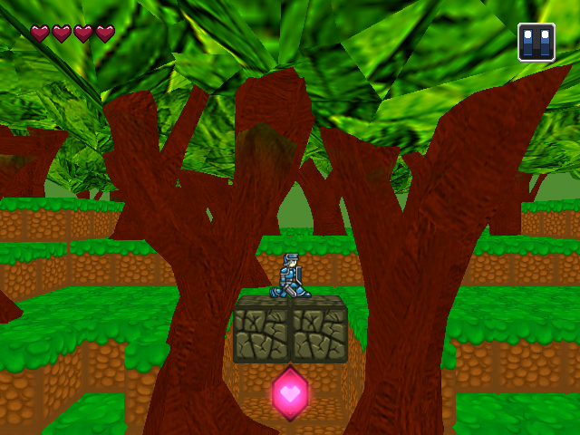
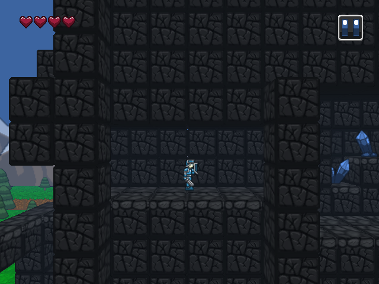
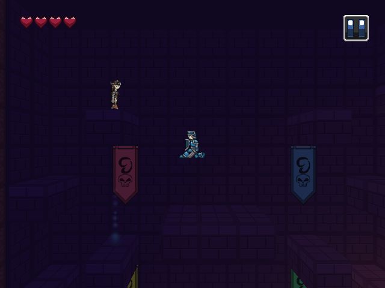
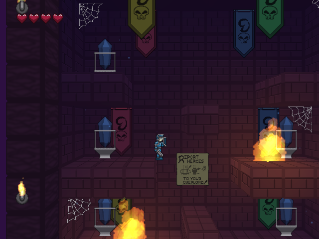
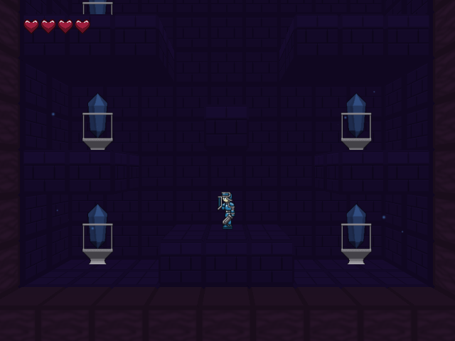
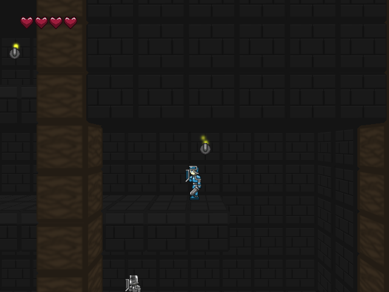
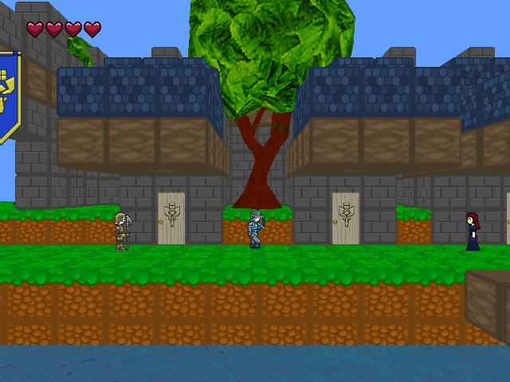
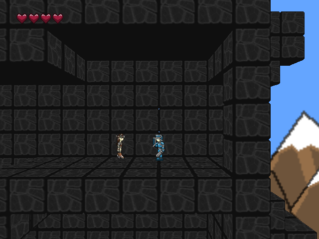
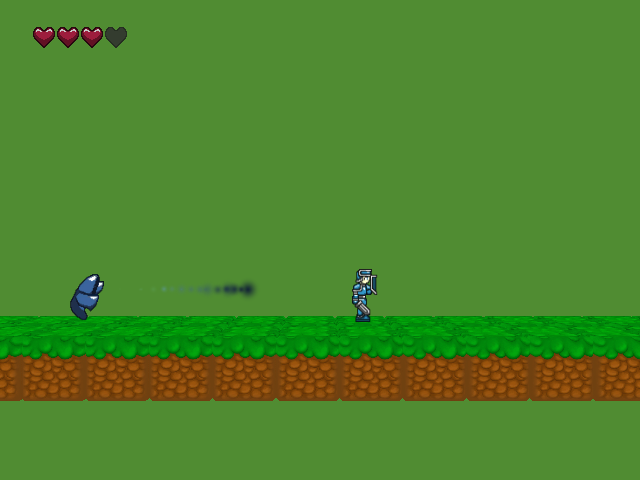

The Hero's Journey
A Sidescrolling Swordfighter made in Unity for OUYA, Android, Mac, and PC
Week 42
19 Jan 2014
This week I worked on building Lord Artasandro, the final boss of the game, and putting some polish on the game.
A Final Boss
Lord Artasandro is an interesting case, that has led to my rethinking my early boss AI, which built off of existing enemy AI scripts. I've created a pretty formidable boss sequence for Lord Artasandro, though it can be broken. I now need to down-tune Artasandro so he's not quite so nasty.
Artasandro himself is a pretty nefarious boss. He uses teleportation, strong physical attacks, and magic spam to bring his enemies down. By this point, you should have the tools to handle him, but I promise with his massive health pool, it won't be easy. And, may God have mercy on you if you try it with default health.
Spit-Shine!
I also was able to do some polishing on existing game elements this week. For one thing, I made the breakable blocks, and bedrock, way prettier. Here's the breakable blocks before...
...but, here it is with a bit of polish applied...
I was also able to add a floor version of the bedrock for the Evil Castle lead-up maps!
The good news is, with Artasandro's AI in a shippable state, I have about 13 days to take what I have in the game, and polish it so that it's ready for you, the gamer! Stay tuned going forward.
What's next?
Well, polish. I'm looking at going back to some old bosses and improving their AI scripts with some of the things I've done on Lord Artasandro to make the boss fights more interesting - Garlan could really use Artasandro's teleport mechanic, while Barbariccia would do well to acquaint the player with the Magic Spam.
I tried improving the crap forest trees, but it didn't go so well. If I can find a better alternative I will, but it's looking increasingly like I'll have to patch the ugly out of those trees. It's not ideal...but I'm not blowing anymore deadlines on this game.
I'm also working on NPC text again. It seems my first attempts at cleaning up NPC dialogue to be more helpful to the player weren't quite enough, and really NPC text is the guiding light for both player objectives and story, and indications about game mechanics. Needless to say, it's pretty darn important.
Finally, I'm planning to create a webplayer with a new mechanic - Ambush Events. As it stands right now, I have static enemies on a map. Every time you enter a map, the enemies are there, and you beat them. And, that's it. What an ambush event provides is for a dynamic event that locks screen movement and spawns a number of waves of enemies. As I abandoned the capability for pacifist runs a while back - because I'm leaning on the swordfighting mechanics to make this game worthwhile - I could only see this change helping the game be the best possible experience.
When's the next webplayer?
Release Candidate builds will be available when I've completed a particular bit of polish. There is no strict schedule, they could come out any time. When I release a Candidate, please, play it critically and give me as much feedback as you can, so I can make the best possible game!
Another Note
It's probably long overdue, but I've been forgetting to say something very important on these weekly updates - thank you for sticking with this project! 42 weeks is a long time; if you remember when I didn't even have a GitHub IO site up for this, you're already a veteran of this project alongside me. This hasn't been the easiest project to build or follow, and the fact that you've all followed with me is really humbling. Thank you very much. I don't know any names, but this project is dedicated to each and every one of you. Your interest makes this possible.
Week 41
12 Jan 2014
This week, I focused on planning, and implementing parts of the ending sequence of the game.
The Evil Plan
My main goal this week was to get the 'Main 14' finale sequence taken care of. This is where, if you've managed to defeat the Evil Lord Artasandro, you can get your just reward, pats on the back, and the you win screen!
I simplified the ending a la Dragon Warrior I. You defeat the Evil Lord (g'luck with that), return to Aylea Castle, where the King shoos you back to Skyra posthaste, and for good reason. Once there...well, it's a happy ending. Something to look forward to.
Planning Ahead
With most of the game done, I also planned what I'm going to do to make the final, Arena-style boss fight happen.
First, I abandoned the final Evil Castle a couple of weeks ago. However, given that Artasandro was supposed to be an expy for Arthas from Warcraft lore, I felt that a coliseum fight (Crusader's Coliseum?) would be an appropriate place for a showdown. It's actually going to be an Evil Castle that is being built, until the whole Aylean Military shows up on their doorstep, asking for sweets.
Once I've got the final boss fight taken care of, I will immediately upload a Release Candidate for the game and solicit input from everyone and anyone I can. I know I have to fix some NPC text still, I could stand to add more doodads to the game world to make it feel more lived-in, and there's some hints to where Heart Runes are that need to be included so they're not quite 'Guide Dang-Its.'
The idea is to finish Artasandro's boss fight, and make it (barely) winnable this week, then fall immediately into fixing bugs, and improving what I have until it earns your donations to my Patreon campaign!
No Webplayer this week?
Given that I'm working on the boss fight, and thus a release candidate, you may, but definently not today.
Week 40
5 Jan 2014
This week, I worked on NPC dialogue, making it a lot better, but also had some unexpected breakthroughs in music, and the future of my games projects.
Uncheesing NPC Dialogue
The main focus of my work this week was going back and looking at existing dialogue, and improving it. Since this project started as a prototype, there were a lot of lines of dialogue in 'just because', some were completely obsolete due to the way the story of the game has evolved over time, and others were just plain bad. Fortunately, my linear dialogue system is generally pretty easy to modify.
Castle! Hammertime!
An unexpected epiphany I had was with the music in Aylea Castle. Originally I just used the overworld theme in the castle, which was OK. The modified theme is actually an arrangement of the town theme, but with brass, percussion, and a more militaristic feel. I think it went well.
The Future! [Insert Echoes Here]
Finally, I fulfilled one of my New Years' resolutions, and launched my Patreon Campaign. See, game dev isn't my day job, which means making this stuff comes out of my pocket. Now, I could charge for it, but that's really inconvenient. So, I'm going to keep my stuff free for everyone to play.
Of course, that brings us back to paying for assets, etc. I want the games I make to be really good, even though it's just me making them. So, enter Patreon. You can pledge a certain amount to me when I complete a game or every tenth Let's Play video, thus allowing me to keep the momentum going and making things that people - like you - enjoy! And, I want to earn your subscription.
What's Next?
This coming week, I am actually going to create the 'outro' sequence which shows the happy ending you get for defeating the Evil Lords. I'll see it, because I can start my game wherever. You won't be able to see it until my release candidate is uploaded. When I get that done, I'll start changing Operation: Desert Fox for the final battle against the Evil Lords.
You could earn it by showing us a webplayer?
It's not complete yet...but, well, I've went ahead and uploaded it. Just remember, if you do somehow manage to clear Operation: Desert Fox, it's not staying that way for long.
Week 39
29 December 2013
I've had a good, long Christmas vacation, which has allowed me some time to rest, reflect, and plot a better course for finishing off The Hero's Journey!
Writing is important
The first thing I am going to work on, is the NPCs in the game. As I've progressed this game from a mere prototype to something for release to the masses, much of the prototype writing (read: dev excuse plot) has remained in the game. This isn't entirely bad, either - much of those elements are good ones. But, there's some plot holes, inconsistencies, and some details that have been left out, partially by design, partially because when I wrote them I hadn't fully considered the plot.
This coming week, I am going to be working on the dialogue of The Hero's Journey, specifically making sure the information and background of Aylea is ready to ship. I refuse to do a KOTOR 2 with this game.
Flattening an Evil Castle
One of the things that slowed me down back in Week 37 was, while the whole Dark and Light World mechanic is cool, the fact remains that I've done just about everything I care to do with the Evil Castles. Garlan's Evil Castle teaches the player about switches, breakable blocks, and fire barriers. Barbariccia's Evil Castle teaches the player about teleporters, logic puzzles, tricky jumps over fire barriers, and dealing with projectile-based enemies en masse.
I've decided it would be the best thing for the game to remove Evil Castle 3, and instead make Operation: Desert Fox the final showdown of the game. It will require some slight additional work, but that's OK. I've already got everything in the game to make it doable without extra code or art.
Finishing the Game - For Real This Time
This is the critical moment for the game. I've come so far, from a mere prototype of the core Zelda 2 mechanics, to nearing the release of this game's Release Candidate. I'm giving myself one final deadline - the end of January - to make this happen. I should not need any more than that, and don't plan to take it. It's high time this game was completed, but in the best possible way.
Week 37
15 December 2013
This week, I've been building the geometry of the Light World part of Evil Castle 3, and planning how best to make the final boss fight work!
Bossing around the final boss
The challenge with this dungeon comes from two directions. First, physically attacking the boss is suicide - he will one-shot kill Tim, leading to a restart of the entire Evil Castle. Secondly, the Light World/Dark World mechanic forces the player to always be looking for singularities to the other world. Of course, once the boss gets damaged enough, he can phase-shift himself at will (like all good bosses.)
While my work this week has involved building the Light World geometry, and creating an initial form of my singularity effect, the other part has been planning the Dark World, and what to do when the boss phase shifts. In the light world, he becomes an uninjurable shadow that follows you around. In the dark world, he becomes this radiant aura that follows you around. That being said, when the boss is solid, he loses health slowly in the Light World (the Light World mechanic involves avoiding him and monsters and traps in your path). In the Dark World the boss gains health, meaning you have to leverage the powers that Garlan and Lady Manseles are conferring to you to damage him so that he A) stops passively regaining health in the Dark World, and B) he phase shifts, so that C) you can get out of the Dark World, since your health steadily decays there.
The Light World's architecture is emphasized by loops and places that cause the boss to phase into existence unless he's been damaged enough. The Dark World's architecture is more linear, though still with some choice to where you pop out in the Light World, but emphasized with nasty traps and monsters that are guaranteed to drop red health crystals (restores 1 heart. You lose half a heart every n seconds in the Dark World.)
Talk about hard!
The other thing I'm planning is how to change the text throughout the game. As I've gone along, my concept has evolved from a somewhat whimsical take on a JRPG story, to a lighthearted tale of Tim saving his father, to a slightly darker tale of Tim saving his father while wearing a mysterious suit of crystal armor that causes him to be a bad-luck magnet, while making fun of JRPG tropes where able.
So, before final release - once I've build Evil Castle 3 completely, and have completed the ending sequence - I'll be going back and mucking with NPC text!
Sounds good, can we see what you've got?
Not yet; it's not ready.
Week 36
"8 December 2013"
It's a few days late, because I had a blast with the Starbound demo, but this past week, I finished off Operation: Desert Fox!
Diacritical Dialogue
My repurposing of the Desert map is complete. I have created a gauntlet of all the monsters in the game, a wham line from Lord Artasandro about the Crystal Armor that Sir Tim has been parading about the Aylean countryside in, and added some new dialogue around the countryside!
"Main 13", the dialogue phase before the final battle against Artasandro, is critical. It opens up a slew of information around Aylea about various things, including more information on the whereabouts of Heart Runes.
This is important for two reasons. First, I totally intended this part of the game to be a difficulty spike above and beyond the second half of Evil Castle 2. Second, because of the difficulty spike, if you've (somehow) managed to traipse through the game with your original four hearts, I intend for the final Evil Castle to challenge your ability to survive by making you use multiple skills I've been trying to convey through the course of the game. Long story short - stuff got real.
Sounds awesome!
I know, I know. You hear this and want to play now, but it's not ready yet. I want to slightly down-tune the difficulty with a default heart count (such that it is remotely possible to do with default health.) But, the fun part that you will want to play starts getting built this week. Look forward to it.
Week 35
1 December 2013
This Thanksgiving weekend, what did I do? Find out now!
How to spend a holiday as an indie game developer
I mostly played Rift and Halo 4. BUT I worked on the Operation: Desert Fox intro map for the final boss and final Evil Castle.
You really didn't do a lot, did you?
Nope. It was a holiday. Don't judge me, man (or, woman.)
Next week's work will involve finishing Operation: Desert Fox, and the lead-in to the final Evil Castle.
No work, no webplayer right?
Yeah, no webplayer this week, and probably not until I have a release candidate for you to climb over and test the heck out of!
Week 34
24 November 2013
Evil Castle 2 has been completed! The game is in the final phases of development, now.
The Great Bug Hunt
This week I finished off Evil Castle 2 and the boss fight against Lady Barbariccia...a few days ahead of this update! This meant, I had time to go and playtest the entirety of my game, and look for nagging issues that needed polish.
While I doubt that bugfixes require screenshots to talk about, know that I fixed a few things. You'll probably see at least one fix in this week's dev webplayer.
That Sinking Feeling
With Evil Castle 2 complete, there are only three real bits of new content left to create: Operation: Desert Fox, which is the large-scale confrontation against Lord Artasandro; Evil Castle 3/Lord Artasandro himself, which are combined, because the final Evil Castle is also the boss arena.
It's not uncommon for me to spend two weeks building the Evil Castle, and then another few days working on Boss AI/mechanics/etc., which means I'm likely looking at a Christmas release of The Hero's Journey; forget my November 30 'deadline.' That's now two self-imposed deadlines missed, which irks me a bit. On the other hand, I would rather release a reasonably well-polished game.
Waiting for Christmas sucks, I wanna try now!
Well, you can try now!
Week 33
17 November 2013
At last Evil Castle 2's geometry is done, and the boss in progress!
Taking a Pause
One of the more technical things I did this week was implementing the pause menu. It lets you pause the game physically, save the game and exit to the title to prevent save-scumming, and alter settings such that the game is more comfortable!
Stumbling Building Blocks
One hazard of working on things is that you can break stuff. This week, I did that a bit.
I had a couple of minor hiccups with switches - yesterday, I broke the relationships of switches to flames twice, trying to address some other issues. The lesson to learn is to be very careful when working with your Prefabs! They're helpful and convenient, but you can spring unexpected changes on yourself. Fortunately, the first thing I do prior to developing is play-testing everything to the current point.
Bossin' Around
All of this is was a run-up to building the final part of Evil Castle 2: Lady Barbariccia. She's based on the Teleghast AI script, but she has a few key points of difference.
First, if she teleports somewhere, and you don't get on-level with her fast enough, she causes a bunch of Large Blue Magic projectiles to fall from the ceiling. These are difficult to avoid! Of course, if you play close attention to things before coming into the Evil Castle, you will pick up an ability that, in concert with the dungeon item, will allow you to survive such an onslaught...
Also, her projectiles are always Large Blue Magic bolts. These are not just bigger, rendering high/low posture immaterial (they can be parried from either position due to their size), they deal significant damamge if they connect! She has fewer animations because of this.
Finally, I updated the ActivateObjectOnDeath script to allow it to turn objects off as well. That comes in handy for that flame wall on the far side of the boss chamber.
Can we try it?
Ya. See build notes for details.
Week 32
10 November 2013
Evil Castle #2 is nearly done, and I've got some details on the final dungeon of this game!
How to Finish an Evil Castle
Evil Castle 2 is a confusing place, composed of the most massive teleportation puzzle I've ever constructed.
The trick with finishing out a teleport puzzle is to take it a few areas at a time, and use the very things that help the player figure it out, to design it in the first place. You may notice all the banners in previous screenshots; those banners mean something. The player who figures out what, is much more likely to survive the dungeon.
The Third Castle
The third Evil Castle, belonging to the corrupted Lord Artasandro, will be unlike any Evil Castle you've yet seen in the game.
Evil Castle 3 will have two odd things going on: a Light World/Dark World mechanic, and the fact that the entire Evil Castle is the boss arena. The Light World causes HP to steadily regenerate; the Dark World periodically spawns a new type of enemy, the Shadowling, which are guaranteed to provide Health Crystals. Of course, the Dark World also steadily depletes your health!
But, it gets better - the Light World/Dark World health mechanics are inverted for Lord Artasandro. In order to defeat him, destroy the third and final Dark Crystal, and save Aylea once and for all, you have to get him to stay in the Light World, or deal him more damage than the Dark World replenishes. It will be a fitting final challenge to this short, but hopefully action-packed game.
Sounds freaky...can we try it?
Not yet. I should have a webplayer up later this week with the completed Evil Castle 2, though!
Week 31
3 November 2013
Some exciting work was done this week on Evil Castle 2 and polishing up the game!
Building another Evil Castle
This week I have been slowly fleshing out Evil Castle 2 with teleporter choices, traps, fires, and all sorts of stuff.
The point of Evil Castle 2 is that it is less about brute force - though you still have to fight enemies - and more about logically deducing things about the Evil Castle. Only the smart hero has a right to challenge the Evil Lord! To that end, there are clues all over the place about the consequences of your actions in the Castle. You just have to look for them, and reason for yourself. After a short time, you'll find they make sense.
Spit shine
In addition, working on the Evil Castle has prompted me to improve a few things. I've added some doodads to the world, including cobwebs (for that creepy unkempt look), Evil Banners for the Evil Castles, and I've drastically improved the fire effects on the torches and fire barriers.
The other takeaway that will lead into the final Evil Castle is the idea of breaking my Castle geometry out into wings. Too much geometry being grouped together causes the geometry to no longer render, which is not desirable. I had that problem in the Karikako Catacombs, but in Evil Castle 2, I can happily say I avoided it!
Can we try it on?
Yup.
Week 30
27 October 2013
Another week, with progress to show!
Doo for Dad
Since Kelde has began helping out, one of the things we've agreed could be better is the profusion of doodads - that is, cosmetic objects - in the game world. I've been focusing on building content instead of decorating the world of The Hero's Journey such that it feels lived in. But, it needs to feel lived in.
As I've only just began building more doodads for the world, I'm not yet going to show a screenshot. I would like to show one off next week, though, so that's sort of a secondary goal for this coming week's development!
Mua for Haa
The real attraction this week has been in the form of starting construction on the second Evil Castle! 
Barbariccia's Evil Castle is a giant puzzle. There are four wings, which have to be navigated in order to reach the Hero's Hilt, and then Lady Barbariccia herself. However, to get between wings, you have to use teleporters! There will be an implicit order to where teleporters take you - I'm working on that right now - which means you must use logic to figure out what's going on!
Side for Quests
Another thing that sort of naturally emerged this week was the Goldensage sidequest. In Dunamne, there is a woman with an injured husband, who could begin recovering if only she had some! There is also Dragoon Kayn who teaches you combat techniques.
As I filled in the event that causes Overthrust to be taught, I thought that this would make a worthy sidequest. The reward? Underthrust. So, I've started working on that.
Player for me?
Yes! I've updated the webplayer with this week's post. As always it can be found here.
Week 29
20 October 2013
I've braved illness, and removing a scene, to bring you today's update!
The Cryptkeeper
This week I focused on completing the 'minidungeon', Karikako Catacombs. In this dungeon, you meet up with an old friend who hands you a useful item that you'll need to get to the second Evil Castle! But it won't be easy - it will combine Teleghasts and Steelguards in a deadly gauntlet deep beneath the earth!
The reason more didn't get done was because I was sick early on this week. That's three hours of dev time lost, which meant cuts to some 'would-be-nice' things.
So, what got cut?
I was going to add a bridge area, reminescent of this game's intellectual forbear, The Legend of Zelda: The Adventure of Link. However, it added little to the narrative, and would take a few days to build anyways. It's not entirely off the table...but the core content of the game is a higher priority than anything else.
What else is there?
Forumgoer Kelde has started helping with some small bits of polish on the project, and provided some helpful bits of feedback that will be implemented in upcoming updates to the dev webplayer. As this game nears completion - again, the goal is 30 November 2013 - the game will become more polished and be ready for its multi-platform deployment.
Can we try it?
As always it can be found here but it hasn't had an update this week...
Week 28
13 October 2013
Karikako Fishing Village is done! But the dungeon underneath it is still being built!
Village People
Karikako was a challenging village to build, but not due to mechanics or geometry. Rather, as the final town in the game, this is where you're supposed to get useful information that will help you find secret locations to grow more powerful, and understand what's immediately going on. At the point you first go there, there's still debate as to whether Lady Barbara Manseles is an Evil Lord at all; all the villagers know is she came with two artifacts looking and acting just fine; she left wearing one and acting like a complete jerk.
Raiders of the Lost Dungeon
The more interesting part of all of this is the Karikako Catacombs. It's a place beneath the Royal Family's summer home (the Karikako Town Center, funny enough) that is crawling with creatures because of another Evil Lord. Fortunately an old friend is waiting down there, to help you get to the boots, and provide some guidance on how to deal with the dread Lady Barbariccia. Yes, you have met him before.
No, he's not the guard at the gate of Aylea Castle who's responsible for saying Welcome to Corneria...
Welcome to Webplayer?
Week 27
6 October 2013
This week, I've been working on the third and final town in The Hero's Journey - Karikako Fishing Village!
It takes a Dev to raise a Village
Karikako Fishing Village is a small town by lake Aylea, built around the Aylean Royal Family's summer villa. In addition to good fishing, scenic vistas, the protective shelter of the southeastern mountain ranges, and good real estate prices, an Evil Lord has recently moved in and started causing trouble.
The other reason why Karikako Fishing Village is being implemented now? There's a mini-dungeon hidden in the town, that has a key item that will be needed to progress with the plot. You cannot even hope to access the minidungeon unless you've gotten to the correct point in the plot, though...
Can I try this minidungeon in, y'know, a webplayer?
First things first: I need to finish Karikako first! That will be in the next webplayer...stay tuned!
Week 26
29 September 2013
This week, I took it slow on The Hero's Journey, as I was working on the next boss: Lady Barbariccia!
Villainous Assets
Lady Barbariccia is the second boss of The Hero's Journey and is fundamentally different from Garlan.
First, Lady Barbariccia is an intellectual, unlike Garlan who Tim has to fight blow-for-blow. She dosen't wear heavy armor, because of this (though she still rocks some skull-emblazoned pauldrons and that odd crown), and instead relies on her potent arsenal of Blue Magic for her combat needs.
Also, as you can see I've built her 'intro' scene, the Manseles Mountain Paths. The Manselesean Mountains are clear in the background, but more to the point, it is at this point in the game that things will start to get more complex. For one thing, you'll be forced to find a key item outside of a dungeon, with clues that the player has to piece together by talking to NPCs! Also, certain sidequests will open up at this point.
A Quest! May I undertake it in a webplayer, prithee?
Not this week...but, I'm getting close to another webplayer, so fret not!
Week 25
22 September 2013
This week, some less-glamorous, but totally necessary work was done on the game.
I hereby grant you a title.
I've been working on the startup sequence of the game. By 'startup sequence', I'm referring to the startup scene, that prepares everything, as well as the Title Screen which is the player's initial access point to the game.
One of the lessons learned earlier in my dev cycle is that my GUI needs to scale well to the aspect ratio of the screen the player is playing on; sure, I could attempt to force the player to play my game in 640x480 resolution, but what about people with widescreen? Sadly, it's a problem I'm still solving; while my buttons, sliders, checkboxes, labels, and various other GUI controls all work as they 'should', images, which form the backdrops for most of these controls are generally just images, and images aren't behaving in my relative setup.
I've been saved!
The other thing I've been working on is the save and load system. Not glamorous, filled with cool visual effects, but it's a necessity - people have to stop playing my game sometime, even as short as my game is. Fortunately, my setup allows me to keep track of what the player does and does not have; all I'm working on are good ways to save the file correctly under the correct circumstances; Android devices will require special permissions, PC can save to a specific location, webplayer can't save at all thanks to Unity's security model for webplayer.
When development gets significantly closer to completion, I'll be asking for volunteers to test the Save/Load system. Until then, just realize that I've got it in and am testing it in-house.
Speaking of, player?
No, not this week; I'm working on the back end concerns, and making sure my preview build can show off the title screen without trying to do things that can't be done.
Week 24
15 September 2013
This has been a huge week for The Hero's Journey! I've been working on some improved special effects, a brand new enemy you'll see a lot of in Barbariccia's Evil Castle, and some bugfixes to previous problems.
Teleghast for you, sir!
First things first, I would like you to meet the new enemy, the Teleghast!

Pictured here: the most annoying ghost you'll ever want to bust.
The Teleghast will teleport around to various points, and fire a Blue Magic projectile at you. At first, you can't do a lot about the blue magic, until you find a certain powerup. Of course, the Teleghasts are vulnerable to being stabbed; they do stick around to watch their bullet fly away for a short time, but will swiftly teleport away.The Blue Magic projectile is something I'm especially proud of! It combines legacy particles, existing scripts, and a custom tag to make for an effect that I didn't have to sprite. This was a positive particle experience, and is one I may go back and apply to the Shototo's particle. Only, instead of making that one a flashy bit of Blue Magic, it'll probably be a big ball of dust that can injure Tim for half a heart.
Bugfixes Ahoy!
Another thing I did this week was fix various bugs that have crept in over time.
First, NPCs face you as you pass them, once again.
Also the Shototo's AI was broken, making it do absolutely nothing; this has been remedied.
I added some interior music to the houses, as it was found to be a bit distracting that the Town music would restart once you entered a house; it was felt that, true to the inspiration for this game, that house interiors should have their own music. At some point I intend to go back to the Maestro audio controller and do something with it such that the music system lives across scenes, but that's too much work as it is; I've already blown my time budget once, I need to get this game finished!
More bugfixes, and features, and content, next week!
Speaking of, webplayer?
I never thought you'd ask.
Note that you'll only see the fruits of the bugfixes in this build; the Teleghasts will come into play sometime this week, as I flesh out the next plot events, and start on Barbariccia's Evil Castle.
Entries prior to IO Site's Creation
Week 10
10 June 2013
First things first, thanks to everyone - specifically, virror and Caliber Mengsk - for the great feedback on my digging-cave demo! Planning another build, probably of the same level, just to see what my controls need. Obviously, being the developer, I have a bit of bias and have 'learned to like' my control scheme! Thanks for keeping me honest, fans and friends.
This week, I've been working a lot with the dialogue system (adding the capability for sidequests), revising how skills/heart runes are obtained and noted as being collected, and adding a new map or two. An interesting fact: as of today, I have (roughly) half of the maps created that I need, barring complete re-builds of a map per user feedback.
I got da POWAH!
I've been changing a lot of things on the back end around this week, but the main thing I've been designing are the powerups that are obtained from the Evil Castles. ...Wait, what!? It's a glowy crystal. How is that a powerup?
Well, there's an item called the Hero's Hilt that lets Tim's sword store light energy. Striking a crystal gives Tim a projectile weapon for as long as he's on the same map. Often, there will be an unenergized crystal, that when energy is restored to it, will cause something to happen. It could involve spawning something nice, it could clear the path to somewhere you couldn't go before, but the point is, you want to move light energy around! And you can only do that, with the Hero's Hilt.
Something else I've implemented is the Earthbane Gauntlets that allow Tim to burrow through rocks. No screenshots yet, because I don't want to ruin the first Evil Castle.
Don't hate the game; where's the Webplaya?
Planning on releasing an updated Cave 4 demo this week with the improved controls for tuning fixes. As for everything else, know two things: A) I'm building it, and B) I want it to be darn good.
Week 9
3 June 2013
Nine weeks in already! It's a good thing I'm making some headway on the project!
Based on my desired gameplay projections, I count needing about 26 playable scenes (not counting residences, which I plan to recycle like crazy)...of which, I already have about 9 or 10 in more-or-less complete, or at least working progress.
Can't See The Forest For the Trees
This week, I've been working on breakable blocks, and a new enemy, the Spyder.
I Spy With My Little Eye...
The Spyder is an enemy I'm really excited about, even though it's similar to the Gohmas in Zelda 2. The reason I'm excited is because the Spyder injects a nice dose of counterplay into the combat.
Spyders behave similarly to their 1987 cousins - they move from side to side, until they sense a player. When a player passes under them, they drop a charge of some webbing to immobilize their prey, and shimmy down their webbing to take a quick bite. Of course, the webbing charge isn't as picky as the Spyder about what it wraps; enemies are restrained from moving for two seconds, just like the player. For players going for a pacifist run, this can be the difference between a Game Over, and successfully-evaded enemies. I just got the Spyder more-or-less working with only a few small bugs (pardon the pun) as of the time of this writing!
Stop, Block, and Roll
The other 'major' innovation on the game this week is the breakable blocks. They're not nearly as special or as complex as the Spyder - they're pretty much just a block with a health system and a death effect attached to them.
What is interesting about the breakable blocks is how I plan to use them. In Zelda 2 they had all sorts of potential. Link got the Power Glove in the Swamp Temple, which allowed him to break blocks, allowing him to excavate XP bags and keys, as well as dig through unstable temple passsages. However...it was never really leveraged as it could have been, to add additional exploration options, or better still, more counterplay.
Exploration options can consist of hiding things from Crystal Switches, to non-breakable platforms (which, I intend to include in one of the secrets.) I look forward to seeing how players dig their way through, around, or in spite of various enemies in pursuit of a mini-dungeon's goal.
Something I'm going to be working on this week is the dreaded Grey Stone block. This block if it falls on something other than a breakable block, will kill it. Yes, even you. If you get every Heart Rune in the game, you still won't be able to survive it. This is going to be very important to Pacifist runners who will need to kill something without being disqualified for the achievement, but will also open up some other tactical options, such as hemming in difficult foes.
This sounds like the Egg McMuffin of Side-Scrolling Swordfighters. Where's the Webplayer?
The game isn't ready for your loving caresses just yet, friends and fans. It's getting there, and will be released with a webplayer demo containing the fight against the Dark Valiant Garlan, the first Evil Lord. You'll see soon enough.
Week 8
29 May 2013
So, this weekend (Memorial Day in the United States) I was sick. So, none of my weekend development happened. Boo!
However, this week I spent a good bit of time working on adding additional things to the dialogue system, particularly conveyance of skills, overriding BGM, and sound effects, as well as designing a new enemy for select maps, the Spyder. The Spyder will be a real game-changer from the original Zelda 2 formula, because the webbing they drop prior to taking a chomp out of you affects your enemies as well! I'm hinging on creative applications of this enemy to create some interesting puzzles, particularly for those attempting a Pacifist Run (no sword damage dealt to any enemy. And, I pre-emptively wish you luck. You'll need it.)
Other Stuff
I've been working with the critiques I have been given up to this point, particularly the World Map camera, and the Jumping controls. I'm making incremental updates to the camera, though I still want to keep the angle a little flat - so far, my tests at 30 degrees of elevation have produced favorable results, as well as rethinking some of the mountain ranges that were really inhibiting player view on the map of Aylea.
As for the jumping controls, I have only this to say: I love character controls. Seriously! I've even written them a poem:
I hate character controls,
Character controls hate me;
Every time a hero rolls
It makes me want to pee.
In all seriousness, though, thanks to Caliber Mengsk for doing what no one - not even I - would, and testing the integrity of Tim the Knight's helmet against various hard objects.
Finally...I'm still creating content! I've got about half of the first arc complete, and am building an appropriate dungeon leading up to the first Evil Castle. My next demo will take the player through the first arc of the game, culminating in the defeat of the Dark Knight, Garlan, the 'meanest' of the Evil Lords...though, important to the plot as you'll see.
Until next week! And, hope that I don't get sick again. I hate being sick.
Week 7
19 May 2013
So, I've started to build content!
After working out some irritating bugs, I've gotten started working on the core game progression! I use a monolithic Sequence Trigger system to determine various things like NPC text or the visibility of Evil Castles. You can see more of this in the Dev Webplayer I've put up!
But be warned; that is a really preliminary, and in-development version. There are some nasty bugs. For instance, if I were you, I would not try to go into a cave. It won't end well.
But, if you've come for pretty pictures...
There's plenty to be found in the webplayer.
Oh no, where is my webplayer!?
It's linked above.
I've really got to stop adding 'where's my webplayer!?' segments to my weekly updates...
Week 6
12 May 2013
Louis, Lois, and Clark
So, I've continued work on the World Map. Given the comments and critiques on the Small Works Art thread, I've changed a thing or two since last time! (Screenshots working on being re-added!)
The first screenshot features none other than an Evil Castle, where one of the Evil Lords is basing their efforts at reviving the Supreme Evil Lord!
The second screenshot is an update of my first world map screenshot. While making it look more 'natural' (I still need to add some tree sprite variants), I'm trying to preserve the shape and color consistency.
On that note, let's talk about that. While I am a programmer, and obviously not the go-to guy for art styles, my art has a clear 'retro' influence, but from far before the days of the NES, Dragon Warrior/Final Fantasy I, or even The Lord of the Rings. No, the driving force behind my style is actually European medieval art!

Notice how flat everything is? How the more important structures/people are bigger, with more detail put into them? Go back and look at my prior screenshots. Notice anything similar? Sure, one may be more pixelated than the other, but you should see a few conceptual similarities. Given how intentionally 'flat' the Kingdom of Aylea is, this also reinforces the story of the game, and the deconstruction of the RPG tropes I will be exploring.
Prithee, hast thou a legendary Webplayer?
Egads! Thou hast caught me flatfooting! Mine webplayer still seeketh not the light of daye, as the world map controller hath not the maturity nor the purity of form to present, lords and ladies. But fear not - like the game itself, it shall be come when thou least expecteth it.
Week 5
5 May 2013
A Venture in Adventure
While working on the town demo, I walled off the entrances to the town of Dunamne. But, this got me thinking: what the heck am I doing? Yeah, I have a town that proves that I can bind a door to a scene, but is that really all I want to demo to my fellow developers?
Nah. I want to do more. Part of what pumped me up to do The Hero's Journey in the first place was doing something a little different than what I'd done before, a little riskier. So, this week, I set out to do the second part of my demo: the dreaded world map. (Working on adding image!)
The premise is simple - as other devs have put it, the world map adds a sense of exploration to the game. Now, this isn't a long game - in fact, I conceptualized it to be Nintendo-short. However, the overall idea is there: it's a way to tie together challenges and deepen the player's understanding that this game takes place in a wider world than the side-scrolling environments that are easily encountered.
Blah blah blah. Webplayer?
Not yet...patience, my fans/apprentices...all will be revealed soon enough!
Week 4
29 April 2013
First, Your Feedback
After much discussion and feedback, it has been decided by you, fans: The Hero's Journey will feature a top-down world map. Now, back to our regularly scheduled programming.
Tale of One Cities
I've been working on the Village demo this week, and to my great dismay found some bugs in technology inherited from my old project, Thora! While I resolve the map-change bug, I do have a screenshot for you... (Working on restoring screenshot!)
I walled off the entrances to the town due to an interesting side effect of the scene change bug, but I'm particularly proud of the small village of Dunamne. This will merely be the first of the game's awe-inspiring collection of three cities!
I'm also challenging myself to work on the progression of the NPCs. While they have a necessarily limited selection of text (I'm not taking a lot of time on them A) because I'm not a writer by trade, and B) I want to work on actual gameplay,) I also want to flesh them out to make them more effective characters and sources of JRPG satire.
Webplayer wa doko desu ka?
This week, I'm working on two things - resolve the Scene Change bug, and actually implementing the game-phase change system from the week before last. The final demo - presumably to be released next week - will feature the village of Dunamne with a sample story scene, that causes the entire town to say different things.
Until next week, fans!
Week 3
22 April 2013
Graphics
I've started some basic work on the towns of The Hero's Journey, including some NPCs:(working on getting image back!)
Work on them is continuing, but they follow the same rules as the Guards and the King: text to guide you and provide world flavor. Nothing special.
Of course, since you see those new blocks (and the way I've done the house interior, for that matter), let's talk about my level design. Originally I was doing a pure cutaway. Nope, not anymore. I felt it more effective that, as I'm using a marriage of 3D and 2D to use my 3D tiles to emphasize the fact that this is a 3D world. With only a few more polys to my scenes, Aylea Castle now looks like this:(working on getting image back!)
With some positive feedback from snowconesolid, I decided this is the way to go with my level design in the game. Caves may or may not still use the old setups, I haven't decided.
Webplayer?
Unlike usual, I updated it a couple of days ago (4/20/2013), but it's quite playable. As always, feedback is loved.
Week 2
15 April 2013
Graphics
This week, I mostly created extra doodads for Aylea Castle, as well as some re-work on the castle block textures. The Castle - for players not attempting the Suicidal Achievement - is important!
Also, created a sprite for King Roderick Broderick Mervin Garvin Aylea XXXIV. I'm working on Princess Nelda's two sprites right now. Why is this significant? It led me to...Working on adding the image!
Systems
...beginning work on the Game Phase system. As objectives are completed, NPCs will change their text to better direct the player what to do. As such, I've created a really simple means of checking the Game Phase, and a scene-level script to tell all the NPCs what their lines are. NPCs are horrible actors!
I'm also working on implementing a slight bit of inertia to the player controls. Not only does a bit of this help with ensuring that the jumping looks right, but also recreates some of the more tactical nuances of The Adventure of Link.
As of April 15, I got the jump in, though the tuning of the decay is subject to some tuning until it's just right.
Music
You can hear the world map theme in this week's webplayer!
Dude, where's my webplayer!?
(Old post; link removed!)
Have a play, and a look around the castle. Right now the text update, or scripted events aren't working, but that's coming.
Week 1
8 April 2013
First, thanks for the outpouring of support, criticism, and ideas! FloatingCoder, Caliber Mengsk, and Sherlock Turtle in particular had great observations and ideas that I'm implementing in the game. Be sure to check the development webplayer for some of the fruits of their ideas.
Graphics
In response to Floating Coder, I've began adding Hurt animations and physics to all game entities, as a visual clue that they...well, got hurt. In the uploaded webplayer you may not can see the Hurt animations just yet, but you will notice upon hitting something or being hit, they will knock back slightly, though there are some slight bugs with that.
However, a treat from fellow forum member Gigabeat:
After posting in the art thread looking for a spot of help on the title pane, Gigabeat came through with this mildly-updated version (not to mention, more accurate kanji.)
I also created a more muted Castle wall/floor 3D tile. I'll have screenshots up with the monologue text system, as that will be pertinent. Expect that sometime this coming week!
Music/Sound
This week, I got to write two short MIDI pieces that will be rendered to MP3 later this week and embedded in the original post. The best one is 'Under the Canopy', the theme for the Illusionary Wood. The other is the World Map theme, which may evoke a bit of nostalgia from anyone who's played Final Fantasy IV.
Bugfixes/Known Issues
Sadly, the controls still need lots of love - as many have pointed out, in a sidescroller, controls have to be good and responsive. I've implemented some slight performance improvements, but there's still problems that I need to solve behind the scenes. As always, I'll have a webplayer up as soon as I do, but I won't comment on it until the next Sunday Evening post after the fact.
However, with some help from AustinK, I've fixed the bug that caused players to be unable to take partial jumps. Now, the longer you hold the jump button (space bar), the longer you will jump, up to the maximum allowed height. Enemy AI has not been affected by this change.
New Features
The new features for this week are ones you can't see, because they aren't in a scene that is accessible in this build.
First, I've added a monologual text system, so that those NPCs you pass in the Castle and in towns can give you helpful hints of where to go, what to do, or more efficiently make fun of JRPGs. I'm working out the kinks, but I want it to have its own little showtime next week if possible.
Further, I'm designing a new enemy, the Steelguard. Unlike the Shototo and Slime, this guy makes you use your sword and shield, but not jump button. His role is to engross you in a sword fight.
The webplayer link in the original post has been updated! Until next week, friends and fans!